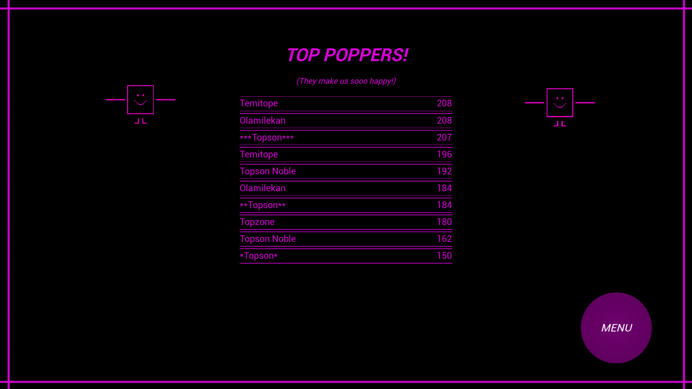
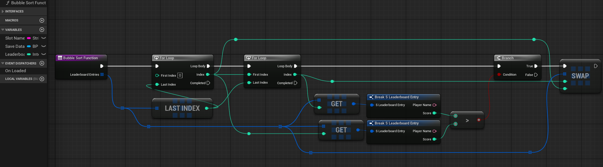

Cantoni
A simple, point-and-click, high-scoring game inspired by street bubble-blowing performances.
Project Overview
A simple, fun-to-play, point-and-click, high-scoring game where players simply pop bubbles. The more bubbles you pop, the more chance you stand to be part of the 'Top Poppers.'
I got the inspiration for this game by observing street bubble-blowing performances whereby a guy blows out a lot of bubbles and people pop them for fun. I saw a lot of this during my visit around some European cities, and I decided to make a simple, fun game around that.
This project allowed me to explore some more aspects of game programming in-depth, especially on how to set up a flexible 'leaderboard/high scoring system' that ranks and sorts players' scores in a descending fashion.
I had tons of fun creating this project, and this is the very first prototype version I'm making. Hopefully, if I have the time, I can make some updates to the game and add more functionalities, such as the ability to select different difficulty levels and some customizable settings that will allow players to shape their experiences with the game.
Tools
Technical Details
Design & Aesthetics
Visual Style: Simple and minimal color, focusing on clarity of motion for quick reaction gameplay.
Character Design: Three expressive, looping characters represent joy and friendship at the game's heart.
Antagonist: A spiky creature that moves cyclically along the screen's edges, dynamically spawning bubbles toward the center.
Audio: Original background track "Cantoni" composed to synchronize with gameplay pacing, giving the experience rhythm and personality.
UI: Clean interface for player input, score tracking, and leaderboard display.
Leaderboard System: Bubble Sort Ranking & Top Poppers
The core technical feature of Cantoni is a persistent leaderboard that ranks players as the "Top Poppers." Every completed run stores the player's name and score, then sorts the results in descending order using a Bubble Sort implementation.
The challenge was keeping the rankings accurate whenever new scores were added while ensuring previous results were preserved.
This was solved by combining an efficient save/load workflow with Bubble Sort, allowing the leaderboard to update automatically after every play session.



Bubble Gameplay: Point-and-Click, Wobble & Spawning
The gameplay revolves around popping bubbles before they reach three cheerful friends at the centre of the screen. A creature continuously orbits around them, spawning bubbles toward the centre while each bubble follows a subtle wobbly motion.
The challenge was making the bubbles feel lively without becoming frustrating to click.
Carefully tuned spawning behaviour, point-and-click interaction, and animated motion produced responsive gameplay that remains simple, readable, and enjoyable.
Persistent Data: Save, Load & Replayability
To encourage replayability, the game remembers player names and scores between sessions. Returning players can immediately compete against previous runs and improve their ranking.
The main challenge was designing a lightweight persistence system that integrates seamlessly with gameplay.
An efficient save/load system was implemented as the foundation for the leaderboard, allowing player data to be stored, retrieved, and ranked reliably.
Highlights
>>> Implemented a custom leaderboard system with persistent score saving and real-time ranking.
>>> Created a data-driven player naming and scoring system with memory retention between sessions.
>>> Designed cyclic enemy AI that orbits the scene and spawns projectiles dynamically.
>>> Built timed gameplay flow synchronized with the original Cantoni soundtrack.
>>> Composed and produced the game's theme music, integrating it directly into gameplay rhythm and feedback.
>>> Focused on polished UX, ensuring the leaderboard, animations, and end-state transitions feel smooth and responsive.
Gallery